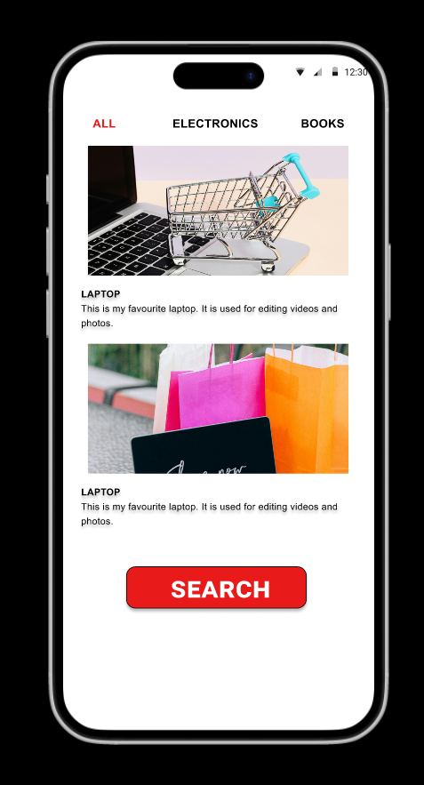
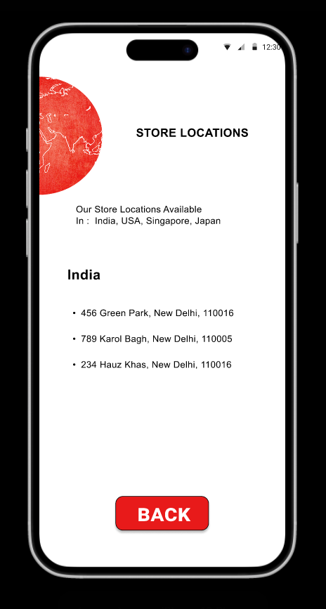

E-commerce Website UI/UX
A comprehensive mobile app prototype designed in Figma.
User Flow
The app guides users from a welcoming "Start" screen to a clear product categorization page (Electronics, Books, etc.). The navigation is designed to be intuitive with a bottom tab bar for Search, Location, Cart, and Settings.
Visual Identity
I utilized a stark contrast of red and white to create a bold, modern look. The "AS CART" branding serves as a central anchor, ensuring brand recognition throughout the user journey.


Features
- Clean Product Listings: Large images and clear descriptions help users make quick decisions.
- Store Locator: A dedicated section for finding physical store locations, catering to an omni-channel experience.
Tools Used: Figma